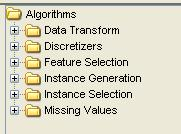
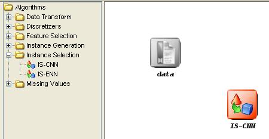

This category includes several preprocessing methods:

- Data Transform: Methods for transforming the format of data: Nominal to binary, decimal scaling..
- Discretizers: Method to convert real or numeric data into nominal data.
- Feature Selection: Methods to select features of the data.
- Instance Generation: Methods to generate new instances from the original instances of the data set.
- Instance Selection: Methods to select instances of the data.
- Missing Values: Methods to asses data containing missing values.
To add any preprocessing method to the current experiment, it is only needed to select it and click in the graph of the experiment:
